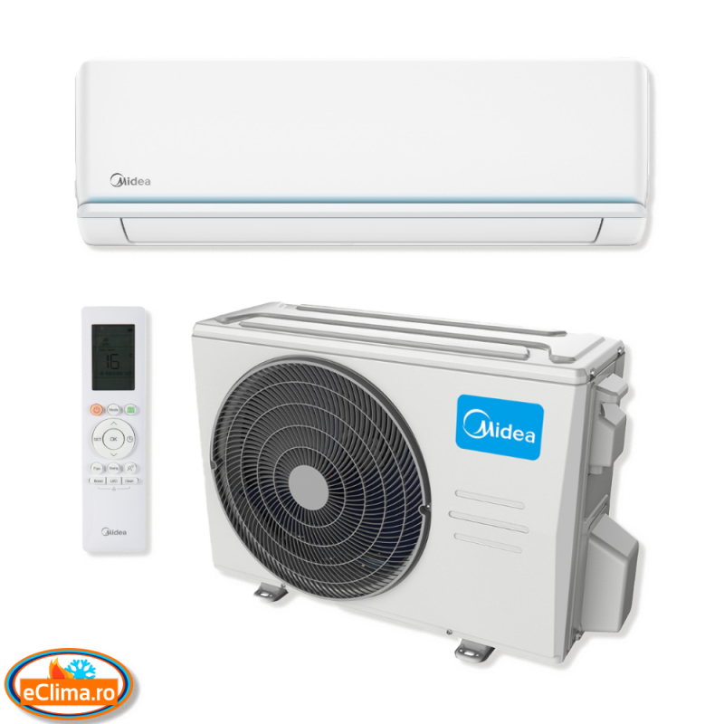
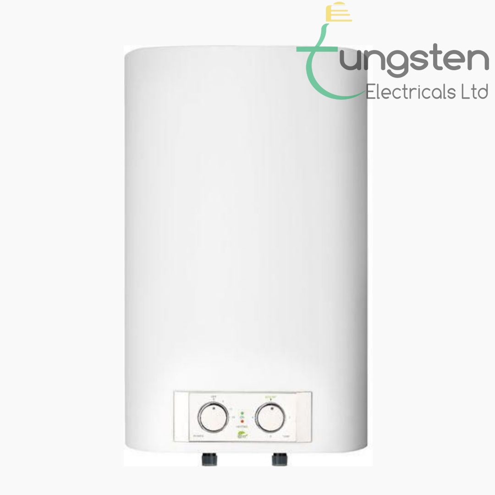
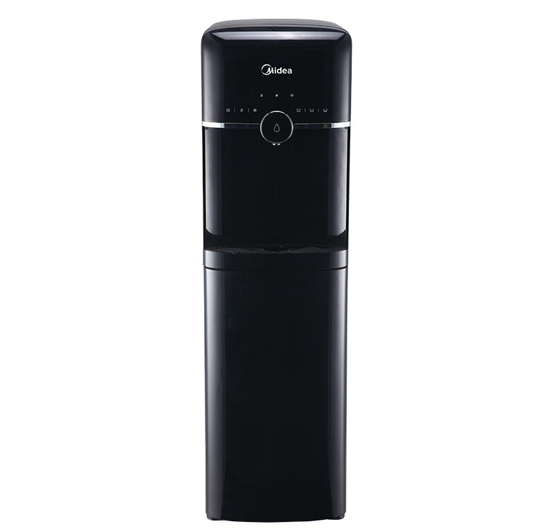

About Us
Midea is a well-known manufacturer of home appliances, including air conditioners.
They offer a wide range of air conditioning products designed for residential and commercial use.
Midea air conditioners are known for their efficiency, reliability, and affordability.
Here are some key points about Midea air conditioners:
-
Product Range: Midea offers various types of air conditioners, including window air
conditioners, split-system air conditioners, portable air conditioners, and ductless mini-split
systems.
They come in different cooling capacities to suit different room sizes. - Energy Efficiency: Many Midea air conditioners are designed with energy-saving features, such as inverter technology, which adjusts the compressor speed to maintain a consistent temperature while consuming less energy.
-
Smart Features: Some Midea air conditioners come with smart features, allowing you
to control and monitor your AC unit remotely using a smartphone app.
This can include features like scheduling, temperature adjustments, and monitoring energy usage. - Quiet Operation: Midea often emphasizes quiet operation in its air conditioner designs, making them suitable for bedrooms and other quiet spaces.
- User-Friendly Controls: Midea air conditioners typically come with user-friendly controls, including digital displays and remote controls, making them easy to use and customize.
-
Installation: Depending on the type of air conditioner, installation may require
professional assistance, especially for split-system or ductless units.
Proper installation is crucial for optimal performance.
What do we sell
- Air conditioner
- Boiler
- Water apparatus
- Heat pumps
  
Our Location
Visit us at:
MIDEA-Fushe Kosove